Now, let’s take some time and talk about the John Titor Time Machine. For it is a mechanism that provides a bubble whereas a physical entity might move from one world-line and one time-line to another.
Titor started inviting people to see photos of the “John Titor Time Machine”, and explained to them how it worked. Titor described it as a “stationary mass, temporal displacement unit powered by two top-spin, dual positive singularities”, and posted several images of the manual. According to Titor, his time machine includes:
- Two magnetic housing units for the dual micro singularities
- An electron injection manifold to alter mass and gravity micro singularities
- A cooling and X-ray venting system
- Gravity sensors, or a variable gravity lock
- Four main cesium clocks
- Three main computer units
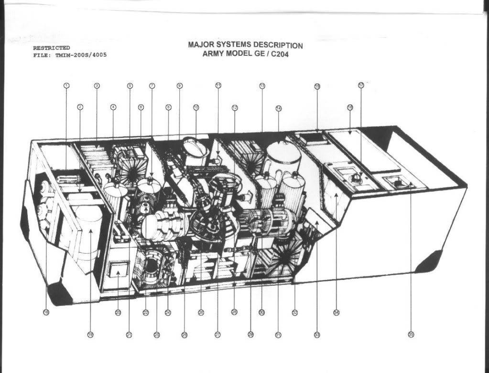
The John Titor Time Machine was installed in a 1967 Chevrolet Camaro (later in a van), and it weighed around 500 pounds. Titor claims that CERN would discover one year later a way to create micro-singularities, but that they would evaporate a split second after and emit large amounts of X and Gamma rays.
“TimeTravel_0 : SERN will discover some very odd things as a result of their high energy experiments, in about a year from your point of view. They will accidentally create micro-singularities, which will evaporate very quickly, and create a massive amount of X-ray and Gamma rays.
It will puzzle them for a while, until they figure out how to add an electrical charge and capture these strange odd and massive particles in a magnetic field.
If you bombard a singularity with electrons… you can alter the size of its event horizon, and thus its gravitational field. By overlapping these fields from two singularities… you can travel forward and backward through time. Its actually quite simple.”
Important Warning
The information within this series of posts are speculative. I have no factual information if this John Titor is what he claimed to be. It is presented herein as the only (or maybe, one of the only) sources that claim to be associated with the vehicles that pop in and out of our reality from time to time.
He was, as far as I know, never associated with MAJestic in any way.
Principle of Operation
The “John Titor Time Machine” works with a dual kerr black-hole principle. Titor comments that the real challenge here was detecting gravity. With his own words:
TimeTravel_0 : Altering gravity is not the hard part.
TimeTravel_0 : Detecting gravity is the hard part.
TimeTravel_0 : I will tell you a little story.
TimeTravel_0 : When time travel was invented.
TimeTravel_0 : They built prototypes that would go back in time for a split second and then return.
TimeTravel_0 : They had sensors and cameras on them.
TimeTravel_0 : ...and they never returned.
TimeTravel_0 : It was later discovered that the machines were ending up about 15 miles away and 3000 feet in the air.
TimeTravel_0 : feet
TimeTravel_0 : The Earth was rotating away from them.
TimeTravel_0 : A system had to be invented that would "hold" the machine to the Earth.
TimeTravel_0 : Its called VGL.
TimeTravel_0 : Its based on very sensitive clocks and gravity sensors.
TimeTravel_0 : It stops the time distortion machine if radical changes in gravity are detected.
wyrmkin_37 : mechanical or electronic clocks
TimeTravel_0 : You wouldn't want to end up inside a mountain or under water...would you?
TimeTravel_0 : Cesium.
His Time Travel Theory
Imagine there is an infinite variety of “world lines” – parallel worlds, possible futures – there would as well be a world line, where John Titor grew up, experienced a World War 3 and time traveled. This is the basics on how the “John Titor Time Machine” worked.
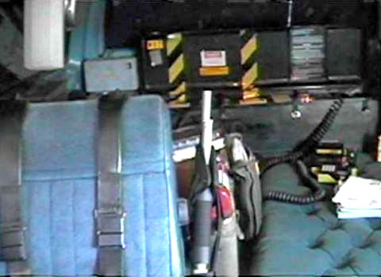
In fact, as I see it, there would always be a half of these world lines where a statement is true and where it’s false, i.g. World War 3 (a half infinity is still infinite). If we do not experience this event in our world line, we are in the half where this is not true, while John came from a world line where it actually happened – however, he meant that we are in a world line where this is going to happen.

Question. How come he traveled to our world line, and not somebody else’s? (To get an IBM 5100 computer system, of course – but it still makes me wonder…) Again, there could be an infinite variety of world lines where he time traveled, and another infinite variety of world lines where he did not.
Anyway, here is an explanation from his point of view:
"As far as the future goes, your world-line is about 2.5% different than mine. This is a roughly cumulative measurement based on my arrival in 1975. As far as I can tell right now, you are headed toward the same events I would call “my history” in 2036. However, the very nature of time travel states that every world-line is unique and you are very much in control of what you do and how you get there. Heck, the fact that I’m here makes it different from mine."
The Invention Of Time Travel (According to John Titor)
There are many people with ideas and opinions. When we hear of something that lies outside our experience, we are often desirous of belittling it, or negating it. That is unfortunate, and should be avoided. We need to listen. We need to observe, and we need to think.
“Oliver Stone makes movies. I am willing to concede that he is quite accomplished in the area of film-making. Indeed, we should all listen to him if the subject of making movies happens to present itself here on Zero Hedge. As for geopolitics, Oliver Stone has no more persuasiveness than the unemployed history doctorate that bags my groceries. He would do us all a favor by just keeping his mouth closed and staying with what he knows.” -Librarian . Comment posted in response to an article by famed movie producer Oliver Stone for his article where he claims that four months into the Donald Trump presidency, that it is disaster.
Here is an overview of the operation and the invention of time-travel as described John Titor. Originally posted by John Titor on February 14/15, 2001. Summary is presented herein with comments from the author.
Acceleration = Time Dilation
“As pointed out earlier, acceleration will produce time dilation. This can be observed by the “twins paradox”. As one twin stays on Earth, the other twin in his accelerating spaceship experiences a slower passing of time. When he returns to Earth, he is noticeably younger than his twin who aged normally in Earth time. This type of “time travel” should have been proven already on this world-line with atomic clock experiments. With sufficient power, this type of time travel will only provide practical displacement in a futile direction. This type of time travel is also isolated to a single world-line. You will not meet yourself.”
Time travel is possible along the lines in accordance with the understandings of contemporaneous literature and science. Time dilation creates a comparative method of time travel. This method is NOT the same as the method that John Titor used.
This method ONLY provides “time travel” in a forward direction. It does not permit travel into the past.
This method also is limited to a single world-line. It does not permit multiple world-line travel. Moreover, since it is limited to a single world-line and limited to only travel into the future, the time traveler is highly unlikely to meet himself.
This is an interesting analogy, but aside from the purposes of a basic introduction, it holds little value. Further, there are all sorts of arguments that “muddy up the waters” of this issue. Sigh…
Gravity = Acceleration
“As Einstein pointed out with his STR, the effects of gravity and acceleration are the same. Therefore, you will experience the same time travel effects in the twin paradox by being close to a large gravity source. In the atomic clock experiments mentioned above, the reason there was a difference in time was not because the clock in the plane was moving, it was because the clock in the well was closer to the center of the Earth. Constant speed is not acceleration.”
This is basic Statics and Dynamics taught in any freshman engineering class.
Large Gravity = Static Black Hole
“The next step is to find a large gravity source to use in your time machine. Static black holes provide this type of power. As one twin approaches the event horizon or edge of the black hole, the other twin will watch him as he appears to slow down. He will notice his twin’s watch run slower until it stops at the event horizon. The twin moving toward the horizon will notice none of this and see his watch running just fine. Although possible, a trip into a static black hole will not take you to another world-line and it’s one-way. The force of gravity will crush you.”
Gravity affects time. Given a large enough gravity source, one can use it to alter time. This is also well known.
John Titor states that his machine controls micro-black holes. He states that static black holes can provide this type of power.
You cannot use them as they are for time travel. The nature of the black hole will crush the fragile humans by the huge gravitational forces present.
Rotating Black Hole = Doughnut-shaped Singularity
“Fortunately, most black holes are not static. They spin. Spinning black holes are often referred to as Kerr black holes. A Kerr black hole has two interesting properties. One, they have two event horizons. And two, the singularity is not a point, it looks more like a doughnut. These odd properties also have a pronounced affect on the black hole’s gravity. There are vectors where you can approach the singularity without being crushed by gravity.”
According to John Titor, the micro-black hole in the dimensional distortion machine utilizes “Kerr Black Holes”.
According to John Titor the shape is not identical to what is commonly formulated by physicists; a simple rotating sphere. Instead, he claims that the actual shape is more akin to that of a doughnut. As such, the geometry of such an object allows it to possess not one, but two event horizons.
The Kerr metric or Kerr geometry describes the geometry of empty space-time around a rotating uncharged axially-symmetric black hole with a spherical event horizon. The Kerr metric is an exact solution of the Einstein field equations of general relativity; these equations are highly non-linear, which makes exact solutions very difficult to find. Go here; https://en.wikipedia.org/wiki/Kerr_metric
However, I would prefer to digress here as it is my calculations indicate two event horizons as well. The event horizons are clearly shown in the figure below. The singularity is an equatorial line that circles the micro-black hole. (It is not a point singularity.)
The two event horizons differ from that of a classical point singularity = spherical event horizon, to that of a two dimensional singularity. Thus for a two dimensional singularity, the two event horizons are easy to visualize. As one is “above” the singularity, and the other is “below” the singularity. Please see the figure below.
Again, the singularity is not a spherical point, but rather more like a doughnut.
The geometry of such a configuration has a unique gravitational signature. Because of this, there are vectors, or “methods of approach” that a person can use to manipulate these unique properties to avoid the crush-properties of the inherent gravitational field.
A great write up on this can be found on the PDF titled “The Kerr Spacetime: A brief Introduction” found at https://arxiv.org/pdf/0706.0622v3.pdf#35 . I urge the reader to take particular note to figure three which shows a Polar slice through the Kerr spacetime in Cartesian Kerr–Schild coordinates. Location of the horizons, ergosurfaces, and curvature singularity is shown for a = 0.99 m and m = 1. Note that the inner and outer horizons are ellipses in these coordinates, while the inner and outer ergosurfaces are more complicated. The curvature singularity lies at the kink in the inner ergosurface. The reader should note that there are two “kinks” displayed in the photo.
A Kerr black hole is a type of black hole that possesses only mass and angular momentum (but not electrical charge – the third possible property of a black hole).
In other words, a Kerr black hole is an uncharged black hole that rotates about a central axis. It is named after the New Zealand mathematician Roy Kerr who, in 1963, became the first person to solve the field equations of Einstein’s general theory of relativity for a situation of this kind.
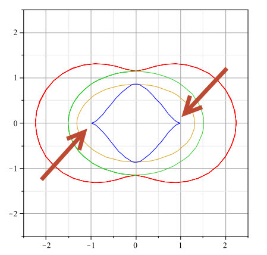
Kerr black holes are probably the commonest in nature, since the massive stars from which they typically form possess rotation (but no overall charge) before they collapse at the end of their lives. By the principle of conservation of angular momentum, much of this spin is then retained by the black hole following the star’s terminal collapse
A Kerr black hole has the following distinct regions:
- ring singularity
- inner and outer event horizons (2 event horizons)
- ergosphere
- static limit (the boundary between the ergosphere and normal space)
It is, conventionally, considered to be the domain of the intellectual. It is considered, by many in academia, to be unstable and not worthy of investigation.
Doughnut-shaped singularity=Passage into an Alternate World-line
“Another other more interesting result of passing through a doughnut singularity is that you travel through time by passing into another universe or world-line. Please see Penrose diagrams for Kerr Black holes or you can examine the calculations of Frank Tipler. So now the problem becomes…where do we find a doughnut-shaped singularity?”
When you pass through a doughnut shaped Kerr black hole, you can enter another dimension or world-line. Because of this you can conduct “apparent” time-travel, by proceeding in the “past” of an alternative world-line.
Looking at the Penrose-Diagram for the rotating Kerr-Black hole, the reader will clearly note that there are two regions; II and III.
This is an idealized mathematical solution to the Einstein Field Equation.
In the idealized mathematical solution, as long as r is greater than zero and less than infinity, you can extend the solution further; and r is nonzero and finite at the boundaries between the I and II regions and between the II and III regions.
The Kerr solution has only two free parameters, the hole’s mass and angular momentum, and they are the same everywhere in a given solution (i.e., everywhere in the diagram). Those parameters determine the properties of the singularities, just as they determine the properties of the space-time as a whole.
Perhaps the reader could best understand the equivalent comparisons in a “real world” adaptation of this equation. In that case, there are only two variables in regards to dimensional –travel. They are angular momentum and mass of the singularity. Depending on the values, they create the two regions, II and III. These represent SPACE and TIME. Or to put it further, it defines the TIME within a DIMENSIONAL WORLD-LINE.
In summary, if one is able to manipulate the properties of a Kerr micro-black hole singularity, one would be able to access a specific date and time on a specific world-line.
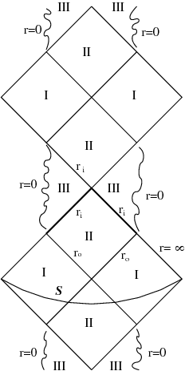
What is interesting, is if you for example take the Penrose Process, you assume that this approximately describes only a part of our universe and we can come from far away with particles carrying angular momentum (if you would not, then how should this idea of taking energy from the BH (BH=”Black Hole”) work?
You send in particles which reduce the angular momentum of the BH, which is only possible if you make a distinction between the BH angular momentum and the angular momentum of the particle).
So from physics point of view, we assume we have a BH carrying angular momentum and a particle carrying a different angular momentum. As soon as the particle enters the event horizon, we don’t know whether it travels to the next universe or ends its life in one of the singularities.
If it travels to the next universe however, the angular momentum of the BH itself should not change! So the only possibility to make the Penrose Process realistic seems to me, by postulating that the particle ends its life in one of the singularities…
The reader should take note that the Penrose process requires a black hole that changes mass and angular momentum, and strictly speaking, Kerr space-time can’t model that. However, Kerr space-time still provides a very good approximation for a process that changes the hole’s mass and angular momentum by a very small amount–for example, an object massing a few tons falling into a black hole a few times the mass of the Sun.
This process can be modeled to a very good approximation by using Kerr space-time with the original mass and angular momentum of the singularity at the black hole, and then, after the object falls in, just replacing it with Kerr space-time with the new mass and angular momentum of the hole. The change is so small, and happens so fast on the time scale of the hole, that there is no need to model the detailed dynamics of the change.
But… But…
Wouldn’t the gravity still affect anyone trying to enter a different time within a different dimension? The answer is no.
There is a point where there is no gravity within the singularity.
By looking at Killing surface gravity equation for Kerr black holes, you can see that gravity would be negative at the inner horizon for an object dropped from rest at infinity with zero angular momentum (ZAMO)-
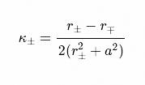
Where,
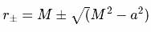
or in the case of Kerr-Newman,
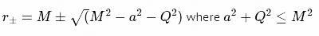
for an equation of the gravity locally (i.e. taking into account relativity) for a ZAMO, the following equation applies (in the equatorial plane only) for Kerr black holes-
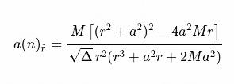
This equation is undefined between r + and r − due to the square root of Δ which becomes negative between r + and r − , to get some idea of where gravity becomes negative mathematically, you could set the equation so that you get the square root of the absolute value of Δ
Note if you use r + and r − in the equation (above) and multiply by the redshift
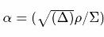
you get results equal to the first equation. For a more extended equation of the gravity locally for a Kerr black hole (i.e. beyond the equatorial plane) for a ZAMO the following applies-
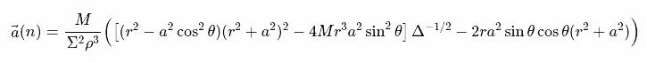
It appears that gravity becomes negative somewhere near the Cauchy horizon, remains negative within the Cauchy horizon and then becomes positive again near the singularity.
Important note; The source for equations (both the the derived equations)- at http://arxiv.org/abs/gr-qc/0407004 page 10.
A Pondering Hawking = Microsingularity
“Steven Hawking proposed the existence of microsingularities that were created in the big bang. They were probably about the size of a proton and disappeared over the years due to an effect of radiation evaporation. (Yes, black holes do emit energy.)”
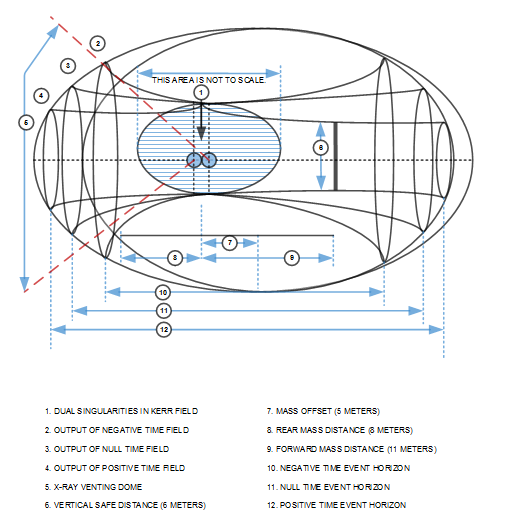
High Energy Physics = Microsingularity
“When I first started posting online a few months ago, I said that major breakthroughs in particle physics were around your corner. Soon, CERN will bring their big machine on line and they will be smashing very fast and high-energy particles together. One of the more odd and potentially dangerous items produced from this increase in energy will be microsingularities a fraction of the size of an electron.”
Artificial Microsingularity = Localized Kerr Field
“Through trial and error, and although they are quite heavy, hot and capable of putting out a great deal of energy (300 – 500 megawatts), it’s discovered that these microsingularities can be electrified and captured. It is also interesting to note at this point that electrified singularities also have two event horizons. By spinning these various microsingularities, a localized Kerr field is created.”
Micro singularities can be electrified. If they can be electrified, they can be captured. By inducing a spin on the micro singularities (possible if electrified), one can manipulate them to create a localized (of course) Kerr Field.
Localized Kerr Field = Tipler Sinusoid
“By using two microsingularites in close proximity to each other, it is possible to create, manipulate and alter the Kerr fields to create a Tipler gravity sinusoid. This field can be adjusted, rotated and moved in order to simulate the movement of mass through a doughnut-shaped singularity and into an alternate world line. Thus, safe time travel.”
So, thus if a micro singularity can be controlled electronically (modification of the electrical field through rotation and other electrical techniques), you can create a localized Kerr field. Having two localized Kerr fields, both under control through electrical modification, one would be able to create a “Tipler gravity sinusoid”.
The manipulation of this “Tipler gravity sinusoid” permits travel in two “planes” or “dimensions” or reality. These are in TIME and in WORLD-LINE.
The reader should be advised that the “experts” in the field think that a Tipler Sinusoid is a notable mathematical exercise, but that it probably has no practical application.
An objection to the practicality of building a Tipler cylinder was made famous by the great physicist Stephen Hawking,. He provided a proof that simply stated that according to general relativity it is impossible to build a time machine in any finite region that satisfies the weak energy condition. In other words, he means that the region contains no exotic matter with negative energy.
The Tipler cylinder, on the other hand, does not involve any negative energy. So therefore, according to Hawking, it cannot possibly work.
Hawking comments ;
"it can't be done with positive energy density everywhere! I can prove that to build a finite time machine, you need negative energy."
Hawking’s proof appears in his 1992 paper on the chronology protection conjecture.
Although the proof is distinct from the conjecture itself,. The proof shows that classical general relativity predicts a finite region containing closed time-like curves. However, these region(s) can only be created if there is a violation of the weak energy condition within that region. The conjecture predicts that closed time-like curves will prove to be impossible in a future theory of quantum gravity which replaces general relativity.
In the paper, he examines “the case that the causality violations appear in a finite region of space-time without curvature singularities” and proves that
"[t]here will be a Cauchy horizon that is compactly generated and that in general contains one or more closed null geodesics which will be incomplete. One can define geometrical quantities that measure the Lorentz boost and area increase on going round these closed null geodesics. If the causality violation developed from a noncompact initial surface, the averaged weak energy condition must be violated on the Cauchy horizon."
The “expert” has spoken.
I actually do not know what the actual mechanism is. I do know that I myself participated in time and dimensional travel. I know that it did involve world-line egress and manipulation. However, I never did study the mechanism; I was never taught the theories behind it. I did not learn how to dissemble or repair the equipment, nor did I even know WHY I was being sent on “missions” or “tasks” using this kind of technology.
So, all I can say to this is that there MUST be a way to make this device work.
It has been my experience that when an “expert” says that something cannot be done, and you have actually done it, that expert is deriving their conclusions from FAULTY presumptions.
Enough about the theory. Let’s look at the documentation that John Titor provided.
Equipment layout & Documentation
John Titor provided some documentation to help explain the John Titor Time Machine. Personally, I have some problems with the documentation. As I will describe. To me, it seems that he created some false documents that he seeded within the baseline documentation. It is unknown why he did this.
Here are elements of the user manual that he provided to the public.
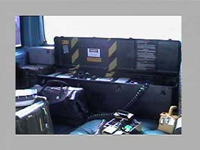
John Titor provided some pages from his manual. Here are some photographs of what he has provided. In my mind there is a serious discrepancy between the cross sectional layout of the time displacement mechanism and the bulk of the drawings within the manual.
Firstly, I do believe that the cross sectional drawing came from the original operation manual…
It is the rest of the manual that I have a problem with.
Taken as a whole, this discrepancy would be enough to rule out any authenticity of this disclosure. That is, if I wasn’t involved in MAJestic and know what I know…
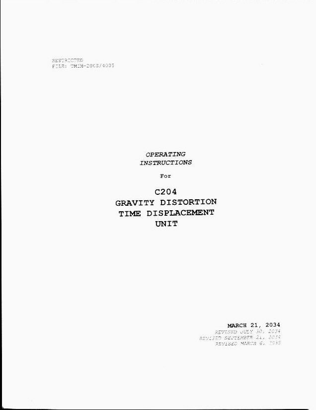
The thing about this disclosure, is that while I can pretty much follow and agree with just about everything that this John Titor is saying and elaborating upon. I have a difficult time reconciling the manual. To me, the lack of formal (long term) use of military typesetting formatting, and the mish-mash of hand-drawn cross-sectional schematics and utilization of commercially available computer drawing packages from the 1990’s are suggestive of fraud.
In the 1990’s, there were numerous software packages that could have produced very nice drawings of a technical nature. These included ProE (Pro Engineer), Solidworks, Catia, Unigraphics, and Autocad.
Yet, even with this “red in the face” structural defect, the idea that the loss of advanced technology and the resultant reliance on typewriters lends some credence to the story. Yet, for me, it is a hard-sell.
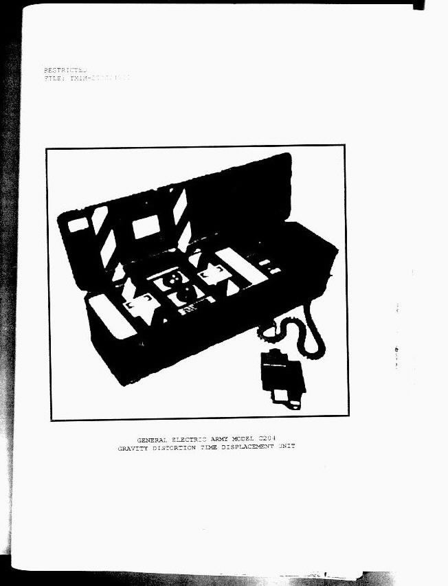
This next page, from the appendix has really thrown me as the illustration clearly uses 1990 computer drawing software technology.
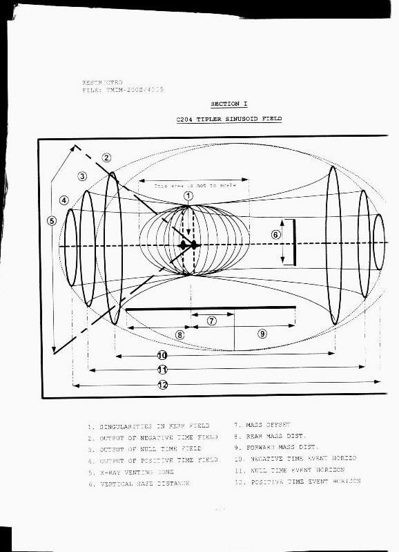
My feelings and opinions are reinforced by the drawing on other pages such as this one…
Come on! This drawing was made with 1990 drawing sketcher technology, not even using hand sketches, or the CAD systems available during that time.
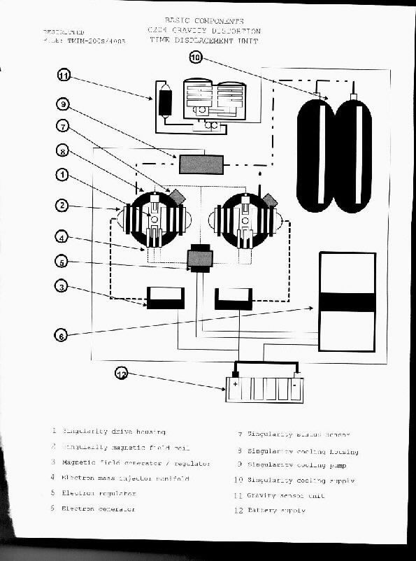
As such… Could John Titor be trying to hide some features of the dimensional displacement unit?
In so doing… Maybe, providing the bare minimums to help us to understand the mechanism, but hiding some key features that make his unit special? A thought worth investigating…
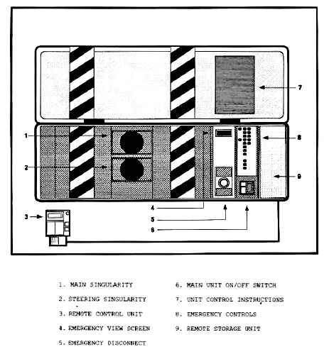
I have no problems with the last pages, aside from the systems used to generate it.
If GE made the unit, and employed illustrators to hand draw the complete unit, they certainly could have used the same illustrators to document the manual. Yes, yes, I know, that technical illustration is NOT the same as technical drawing… which is what saves the manual in my eyes, but to me… It’s all discordant.
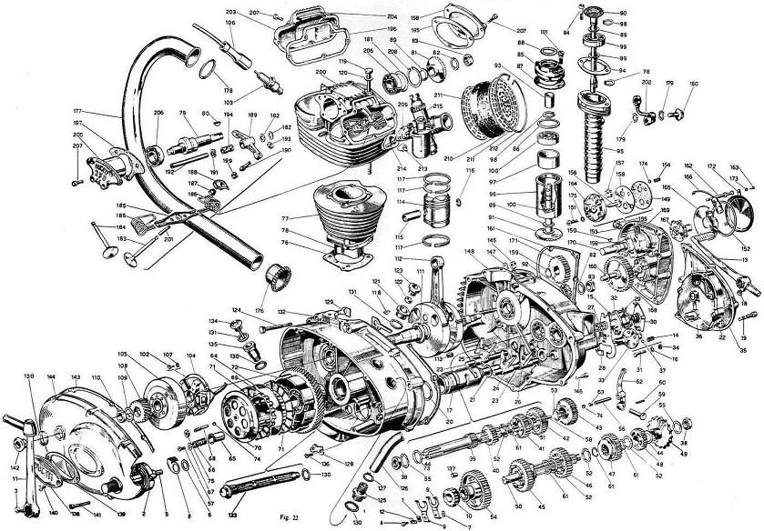
Remember, Hand drawn drawings can be very beautiful and illustrative. The use of 1990-era computer software for technical and illustrative drawings seems … well, fraudulent.
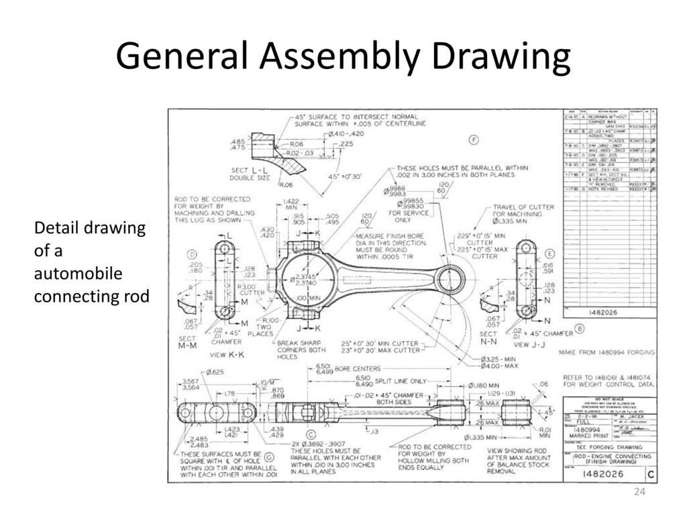
Anyways…
Moving forward…
World-line Divergence
Continuing with his narrative.
“Time itself can be understood in terms of connected lines. When you go back in time, you travel on your original timeline. When you turn your singularity engine off, a new timeline is created, due to the fact that you and your time machine are now there. In other words, a new universe is created. To get back to your original line, you must travel a split second father back, and immediately throw the engine into forward without turning it off.” -John Titor
John Titor’s time machine was only accurate “to about 60 years.” He couldn’t travel much farther than that, because the world-line divergence experienced in doing so would render his destination practically unrecognizable. In Titor’s words, “the longer the unit is on past a safe divergence confidence, the ‘stranger’ the world-line becomes.”
“The C204 begins to ‘break away’ at about 60 years. This means the level of confidence drops rapidly after 60 years of travel and the world-line divergence increases. In other words, if I wanted to go back 2000 years and meet Christ, there is a better than average chance I would end up on a world-line where he was never born.” – November 4, 2000
This divergence confidence was calculated to be about 1-2%, and newer versions of the time machine were being perfected in the future to make this more accurate:
“I would equate the ‘future’ GE distortion units to their current jet engines. The first one worked great but they can always make it better. The C204 unit uses 4 cesium clocks. The C206 uses 6 cesium clocks but they use an optical system to check the oscillation frequency. This makes the world-line divergence confidence much higher.” – November 7, 2000
According to Titor, you could “imagine your path through time [as] through a cone. The farther away from the center of the cone, the more differences you will see in the world-line.”
The VGL, computer systems, and clocks worked together to measure the divergence:
“The measurement for world-line divergence is an observation variable isolated to the distortion unit. An effective analogy would be a ‘gravity radar”. The unit’s sensors take a ‘snapshot’ of the local gravity around the unit before a flight. During travel, this baseline is periodically checked to make sure there are no major changes in the environment that would cause a catastrophic mass failure (brick wall appearing from nowhere). The percentage of VGL divergence from one world-line to another is a calculated guess by the three computers that control the unit based on its starting point. It is useless in describing characteristics of individual world-lines.” – January 10, 2001
This is accomplished using gravitational density flux sensors. In many ways these are similar to the magnetic flux sensors commonly used in industry today. Here is a prototype of one that I was involved in way back when I lived in Boston.
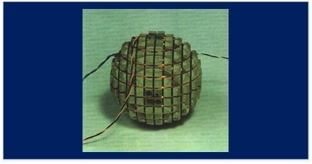
The Mechanism
The photographs of the mechanism holds some significance if you are willing to look at it with an open mind.
Firstly, the placement of the Geiger counter on the unit was not an accident. A study of the blurred and pixelated image shows that the needle seemly above zero. This would be the case whether or not the unit would be in operation. This is not something that should be considered casually. While it is easy enough to fake (you place a fake reading in the readout for the counter), it is something that should be obviously necessary if the device was truly operational.
The two micro-singularities have an adjustable grip above each one. Along with that is an indicator (pointer) at the very top of the grip showing orientation. If the radiation field and the resultant dimensional bubble were truly oblong and not spherical, this feature would be mandatory. As for each vehicle, the mechanism would have to be positioned in different orientations, and the singularities adjusted accordingly.
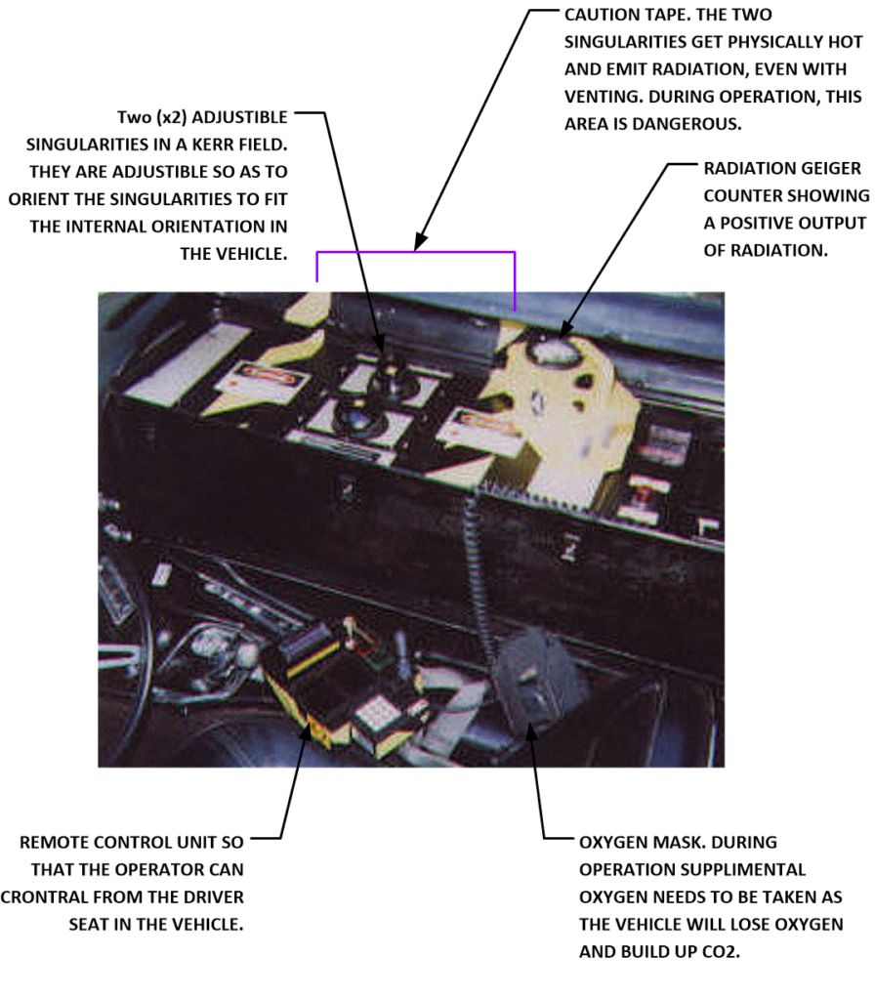
This is not something that is of a trivial nature. Whoever thought up this device came tot he conclusion that they needed to be manually adjustable for proper operation.
Warning tape is present to surround the singularities so that the user can avoid the high potential danger zones of radiation emission and heat. The photos show the remote control. Note that it is connected to the unit via a wire and not using wifi or bluetooth. Also note that in all pictures, an oxygen mask pouch is near the unit and near the driver seat in the vehicle.
Clocks
“My ‘time’ machine is a stationary mass, temporal displacement unit manufactured by General Electric. The unit is powered by two, top-spin, dual-positive singularities that produce a standard, off-set Tipler sinusoid.” – January 27, 2001
Titor’s C204 unit also included a set of three computer systems and four cesium clocks.
The computer systems would “work with” the VGL to plot the machine’s course, and could “record” the trip to make the traveler’s return to his or her origin world-line as easy as possible.
According to Titor, “the really interesting technology is in the computer.” Of course, he never got much more specific than that.
“The computer system is connected to the unit through an electrical bus. There are actually three computers linked together that take the same signals from the gravity senors and clocks. They use a Borda error correcting protocol that checks the integrity of the data and trips the VGL system.”
The four cesium clocks calculated seconds as their basic units of measurement, and were used to calculate the course of the journey itself and the amount of world-line divergence:
“…in a sense you do *dial in* a date and the computer system controls the distortion field. At maximum power, the unit I have is capable of traveling about 10 years an hour.” – January 31, 2001
Microsingularities
In regards to the micro-singularities, Titor said the following:
“…there are 2 singularities in the unit. The gravity field is manipulated by three factors that affect it in distinct ways. [1] Adding electric charge to the singularities increases the diameter of the inner event horizons. [2] Adding mass to the singularities increases the area of gravitational influence around the singularities. [3] Rotating and positioning the polar axis of the singularities affects and alters the gravity sinusoid.” – January 15, 2001
These singularities were housed in “an enclosed magnetic field.”
Ironically, the method of time travel itself, involving the singularities, wasn’t the real issue with constructing the machine. Instead, it was everything else:
“Miniaturizing the clocks and sensors, creating clever ways to vent x-rays and creating a computer system dependable enough to calculate the changes required to the field were the main challenges.” – January 31, 2001
Finally, the unit also had two “security systems” in place:
“One, it has a code that must be entered correctly. Second, and probably more effective now, the unit cannot be used by anyone who can’t add and subtract.” – November 15, 2000
VGL
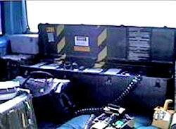
The most important piece of Titor’s time machine was the VGL, or Variable Gravity Lock system. This was the system that kept the machine (and its passenger) fixed in place in its environment, so it wouldn’t end up floating out in empty space, or melding with any other objects, when it arrived in another time.
VGL = The Variable Gravity Lock System.
“…this problem is actually the most difficult part of time travel. Although some of your assumptions about matter displacement are a bit off, the problem is real. Inside the displacement unit are a series of very sensitive clocks and gravity sensors. This system is called the VGL (variable gravity lock).”
This is a very important aspect of this machine.
It prevents the vehicle from materializing inside of a solid object, or underwater, or high above the surface. It measures the gravity in and about the vehicle, and if the gravity does not fit a certain profile equal to “empty space”, it will avoid that world-line or time on the world-line.
“Basically, the unit takes a reading of the local gravity and samples it during the ‘trip’ in pulses. If the gravity is too far off, the unit stops or reverses itself to the last sample period where the readings were correct. If there is some sort of failure, the unit shuts down and drops out to where ever you may be.” – November 4, 2000
Later, Titor elaborated:
“…before the unit “leaves” a world-line, it takes a base reading of the local gravity and adjusts the Tipler sinusoid to ‘lock’ into that position. Although the temporal physics of this statement are wrong, in effect, it holds you to the ‘Earth’. During travel, it periodically checks to see that the field has not varied. If it does, it stops and reverses course or drops out at that point. Buildings and other terrain features are avoided in the same way.” – December 10, 2000
It didn’t take much to trip the VGL, either: according to Titor, simply placing a desk where the time machine was expected to arrive would trigger the VGL and prevent it from arriving. Likewise, the unit could not be used safely while in motion:
“The unit must be stationary during operation due to the sensitivity of the gravity sensors. Any motion with an acceleration component would throw the gravity measurement from the singularities off.” – March 3, 2001
This last statement is very interesting. It could, if taken at face value disprove the concept that brought us here (the contention of this post) in the first place; that vehicles were materializing and disappearing while in motion on the roads.


The Process
“On my world-line: (A) in 2036, I was given a mission in 1975. I turn my machine on and jump to another world-line (B) in 1975 with about a 2% divergence from (A). From the very point I turn my machine off on (B), I create a new world-line just because I’m there. This line can be described as (C) and started when I got to (B). I am now doing my mission on line (C) in 1975 when I discover a very good reason to go forward on (C) and see what happened. I turn my machine on and go forward on (C) to the year 2000. When I turn it off, I start another line called (D). So from my perspective, here we are on line (D) in the year 2000. In order to go home to line (A) I must turn my machine on and go back on (D) until I reach (C) which in turn would take me back to (B) which in turn takes me to a point before I arrived on (B) then I go forward from the point I arrived on (B) back to (A).”
On his initial trip, John Titor’s time machine was placed inside a 1967 Chevrolet. On part of his return journey, he used a 1987 4WD, because “the vehicle needs a strong suspension system to handle the weight of the distortion unit,” and the vehicles needed to match their respective time periods. I’m not sure what vehicle Titor chose for the final stretch of his trip.
Titor described the journey through time as dark, like “driving under a rainbow,” followed by “driving under a tunnel and being in total black.” During the journey, “the car is off and the brake is on.” The gravity field “overtakes you very quickly,” generating a steady G force, and you “feel a tug toward the unit similar to rising quickly in an elevator.”
“The unit has a ramp up time after the destination coordinates are fed into the computers. An audible alarm and a small light start a short countdown at which point you should be secured in a seat.” – November 4, 2000
The machine gives off quite a bit of heat, and the traveler must carry extra oxygen if the trip is likely to be a long one. You hear “a slight hum as the unit operates,” and electrical crackling from static electricity. “Everything is black,” he said.
“When the machine is turned off, it is the reverse affect. It appears you are driving out from a bridge. To tell you the truth, I’m usually sleeping when the unit turns off but yes, it does appear that the world fades in from black.” – November 4, 2000
To Outside Observers
To the observers watching Titor and his machine leave in 2036, he explained the appearance of gravity distortion:
“Outside, the vehicle appears to accelerate as the light is bent around it. We have to wear sunglasses or close our eyes as this happens due to a short burst of ultraviolet radiation.” – November 4, 2000
Later, he said:
“…the time machine does not move as it goes from one world-line to another and then returns. The people watching on the original world-line would wave good-bye and watch as the machine is turned on. There would be a static discharge and the air would appear to ‘ripple’ as if it were getting denser. Then, it would stop and the machine will have appeared to have disappeared. If the machine doesn’t move its position from world-line to world-line, the observer would not see it disappear at all.” – November 20, 2000
A “large chunk of ground” would also be missing from the area surrounding the machine.
“I wouldn’t quite say it ‘scoops’ up the ground cleanly. It sort of vibrates it loose and takes it along for the ride.” – November 22, 2000
As it left, the machine would also be “quite dangerous to get too close” to, because it vents radiation and “has a very strong localized gravity field.”
According to Titor,
“from their perspective, I will only have been gone for a split second.”
Trip to the Future
When asked if Titor could take anyone else with him back to the future, he simply stated that he didn’t think anyone here would like 2036 very much.
He did, however, imply that his machine could support “about three people and equipment,” though he’d have to offload a lot of archival material to fit them in (“There are mass limits to what can be taken back,” he said). The journey to the future, itself? He explained it like this:
“For all of you interested in coming back with me to 2036, perhaps we should discuss the trip. Please be aware, the displacement unit moves through time, not space. First, we will be driving the current vehicle (Chevy truck) with the displacement unit in it to Tampa Florida. From there, we will go back to my arrival date on this world-line. Then we will have to drive to Minnesota, sell the current vehicle and get another one that would have been around in 1975. We will then move the displacement unit (500 lbs or so) into the new vehicle and go back to 1975. Once in 1975, we’ll drive back to Tampa and make the final hop to 2036. If you’d like to stay in 1975, you’re welcome to do that. It can also get quite hot and stuffy during the trip and you’ll be subjected to a 1.5 to 2 G force the entire time. You’ll also need some sort of a re-breather system or oxygen supply.”
Not exactly the romantic time travel adventure we’re all used to seeing in books and movies.
Problems
Of course, the instructions were only useful to a point, and if something went wrong with the machine, well…
“There’s a running inside joke about the technical issues. If the unit has a serious problem it’s not as if anyone can use those drawings to take the electron manifold off the singularity housing with a flat head screwdriver.” – November 25, 2000
Perspective
The technology relative to what Mr. John Titor is describing is relative to his exposure on his world-line. It is not the ONLY way to conduct world-line travel.
I have been exposed to two other ways of accomplishing this using radically different technology. Further, there is evidence that others utilize other methods including vehicles and protected and shielded individuals.
Third of multiple Posts
This post is the third of a series of posts related to John Titor. The other posts are;


Conclusion
Our reality is not what we think it is. I am not the only person who has disclosed that there are others, and other organizations that can enter and leave our reality at will. Another person who made this claim went by the name John Titor.
Only where as, I claim to be part of MAJestic and was employed as part of human sentience management, John Titor claimed to be a person who was part of another world-line. Together, we both claim that the MWI is real, and we utilize it to perform dimensional egress for our own purposes.
- I claim that it is a tool that is used to manage human sentience evolution.
- John Titor claims that he utilized the time variable to conduct acquisition activities in the past.
He claimed that on that world-line, the United States was fundamentally different after a rapid series of events in the late 1990’s. He claimed that he needed to perform some acquisition of certain technical devices through the use of the time-variance option in dimensional travel.
This is a multi-part post.
Take Aways
- John Titor claimed to be a time traveler.
- He utilized dimensional travel to move in and out of the baseline reality.
- As such, he visited our world-line to acquire some technology needed on his world-line.
- That technology was produced in “our” past. Thus the idea that it involved “time travel”.
MAJestic Related Posts – Training
These are posts and articles that revolve around how I was recruited for MAJestic and my training. Also discussed is the nature of secret programs. I really do not know why the organization was kept so secret. It really wasn’t because of any kind of military concern, and the technologies were way too involved for any kind of information transfer. The only conclusion that I can come to is that we were obligated to maintain secrecy at the behalf of our extraterrestrial benefactors.


MAJestic Related Posts – Our Universe
These particular posts are concerned about the universe that we are all part of. Being entangled as I was, and involved in the crazy things that I was, I was given some insight. This insight wasn’t anything super special. Rather it offered me perception along with advantage. Here, I try to impart some of that knowledge through discussion.
Enjoy.


MAJestic Related Posts – World-Line Travel
These posts are related to “reality slides”. Other more common terms are “world-line travel”, or the MWI. What people fail to grasp is that when a person has the ability to slide into a different reality (pass into a different world-line), they are able to “touch” Heaven to some extent. Here are posts that cover this topic.